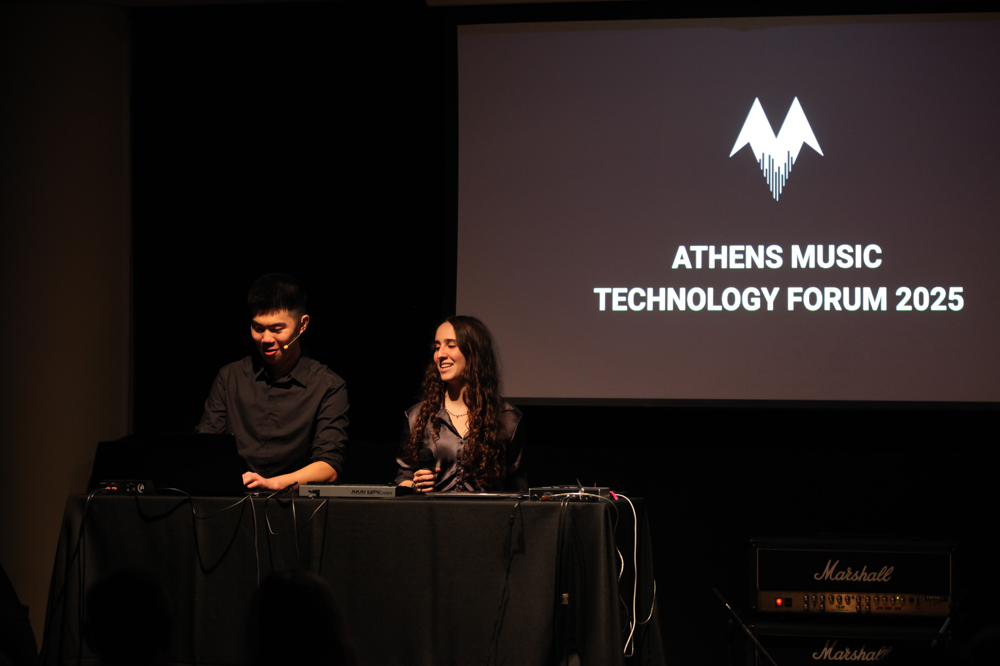

ATHENS MUSIC
TECHNOLOGY FORUM
Interdisciplinary outreach and research in music and computer science
Founded by two high school students in 2025, the Athens Music Technology Forum (AMTF) is an organisation dedicated to education and research at the intersection of music and computer science. It focuses on fields such as computational musicology, sound synthesis, AI, as well as music engineering and production. AMTF aims to uncover the future of sound as it gradually evolves under the rapid development of audio technologies, and explore state-of-the-art solutions and tools in these fields.
AMTF was founded with two main goals: to promote music technology to the younger generation of up-and-coming musicians and artists, and to advance this cutting-edge discipline in the unique cultural musical scene of Greece. Thus, we hope to bring together professionals, artists, students and researchers from around the world to Athens in the first-ever edition of Athens Music Technology Forum in November 2025, themed under "The Sonic Frontier: AI and the Future of Music".
We want to hear your thoughts and opinions on music technology, as well as the future of sound, audio, and the music industry. If you are interested in joining us in this mission, feel free to contact us.

FOUNDERS
PATRICK YAO
Patrick Yao is a 17-year-old high school student and musician. Besides his main instrument, piano, he also plays the guitar and sings. Patrick has composed music in various genres and styles, ranging from classical to electronic music. As a performer, Patrick has played both as a solo musician and in an ensemble, and is a member of his school orchestra, where he serves as the keyboardist and melodica player. Since 2024, Patrick's focus has been on music technology, where his current interests include electronic sound design, music information retrieval, and human-AI interation, serving as a peer reviewer for international conferences.
MARILIA VOYNAS
Marilia is a 17-year-old guitarist and composer. She is a founding member of the Athens-based punk rock band Scab Rosa, for which she is the lead guitarist and backing vocalist. With her band, she has performed at various music festivals and concerts, and has established herself in the local rock & metal scene. Marilia's solo project, MARI//LIA, featuring her own recordings as well as collaboration with other musicians, has amassed thousands of views across social media. Her debut solo, Inertia, was released in September 2025. In addition, Marilia has a keen interest in music production, having mixed and mastered several of her solo works.
RESEARCH INTERESTS
Sound Design & Synthesis
Psychoacoustics, physical modelling, Digital Signal Processing (DSP), instrument acoustics, modal synthesis
Music Information Retrieval
Computational musicology, music feature detection & extraction, audio & MIDI prediction, recommendation systems, audio fingerprinting
Artificial Intelligence & Music
Generative AI, human-computer interaction (HCI), human-AI co-improvisation, intelligent music production, neural networks, reinforcement learning
Audio Processing & Data Analysis
Time-frequency analysis, signal decomposition, audio restoration, source separation, data visualisation
Music Production
Mixing & mastering, DAW & hardware integration, automation, workflow design, recording technologies
Electroacoustic & Electronic Art Music
Acousmatic music, music for fixed & mixed media, soundscapes, installations, algorithmic composition, experimental sound generation
Spatial Audio & Ambisonics
Binaural audio, HRTFs, Wave Field Synthesis (WFS), spatial mixing, multichannel audio, VR/AR/MR sound design, immersive media, acoustic simulation
Music Software & Virtual Instruments
JUCE framework, Max/MSP, Pure Data, SuperCollider, sample libraries, physical modelling instruments, music tool GUI/UX design, computer music programming
ATHENS MUSIC TECHNOLOGY FORUM (AMTF) 2025
Interdisciplinary outreach and research in music and computer science